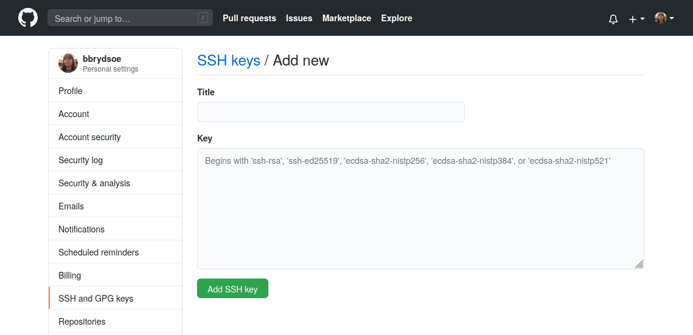

Exercises - Teamwork¶
1. Setting up a repository on GitHub¶
Note
In this exercise you will create a repository on GitHub and work with that.
You will be working on the GitHub website (so you need to have signed up for an account).
- Create a repository (click on the + at the top right of the menu or picking “Start a new repository” on your “home screen”)
- Under “Quick setup”, pick “creating a new file”.
- Name the file “README.md” (at the top, over the file editor).
- Put some text in the file “README.md”.
- At the bottom, where it says “Commit new file” you should put a useful commit message. Then click “Commit new file”
- Notice: the content of README.md appears at top level of the repo
- Try creating another file in a subdirectory (create subdirectories by adding the name you want after the name of your repo, then adding a “/” and your filename).
- Try adding a file that you have created on your computer and uploads (Add file -> Upload files)
- Test out making edits to your files and committing them - all through the GitHub site.
- If you put a file “README.md” in a subdirectory then it will be shown as a “description” for the directory
- When you have made some commits, try click “commits” above the files in the repo and see a list of your commits.
2. Creating and using SSH-keys¶
Warning
Only do this if you did not do that earlier in the week/before!
Note
In this exercise you create SSH keys and upload to GitHub. Then test that it works.
Everyone in the team should do this!
Create a new SSH key
- Open a terminal (Git Bash on Windows). In the command below, “GitHub” is a label added to the key for clarity. You can add any you want:
a. Do this
b. If you have an older system, this may work better
- You will be asked for a file to save the key. Unless you have an existing SSH key, accept the default.
- Enter a passphrase and repeat it.
- Add the key to the ssh-agent. Here we assume the default name:
- Switch to the
.sshfolder, open the fileid_rsa.puband copy it. Do NOT add any newlines or whitespace!
Adding the SSH key to GitHub
- On GitHub, click your avatar in the top right corner and pick “Settings”.
- Choose “SSH and GPG keys”
- Click “Add new SSH key”
- Add a descriptive label for the key in the “Title” field. In the key field you paste the content of the key (~/.ssh/id_rsa.pub)
 - Click “Add SSH key”
- Confirm your GitHub password if you are prompted for it.
Testing the SSH keys
- Open a terminal (or Git Bash)
$ ssh -T git@github.com- It will look similar to this:
$ ssh -T git@github.com The authenticity of host 'github.com (140.82.121.4)' can't be established. RSA key fingerprint is SHA256:nThbg6kXUpJWGl7E1IGOCspRomTxdCARLviKw6E5SY8. Are you sure you want to continue connecting (yes/no)? yes Warning: Permanently added 'github.com,140.82.121.4' (RSA) to the list of known hosts. Enter passphrase for key '/home/bbrydsoe/.ssh/id_rsa': Hi bbrydsoe! You've successfully authenticated, but GitHub does not provide shell access. - Verify that the resulting message contains your username.
- NOTE: Optionally, you could run
ssh-addto add the key. Then you will only be asked for the passphrase once per session. This is relatively safe on Linux and macOS, but not on Windows where it usually saves the key passphrase permanently.
3. clone, push, pull¶
Note
We now have SSH keys set up. Time to test it from your own machine
- Clone the repository, using the SSH address (click “CODE” on the GitHub repository and pick “SSH”). You will be asked for the key passphrase.
- Enter the local repository. Do a
git pulland see that it works. You will have to enter the key passphrase. - Create a file (or edit a file).
- Add the file. Commit the file (
git add,git commit) - Push the file. Again it will ask for the key passphrase. Success!
- NOTE: Optionally, you could run
ssh-addto add the key. Then you will only be asked for the passphrase once per session. This is relatively safe on Linux and macOS, but not on Windows where it usually saves the key passphrase permanently.
4. Teamwork, push and pull¶
Note
One of you should create a repository on GitHub and invite their team.
Remember, on the GitHub webpage the option to create a new repository is in the top right corner - click the “+”. To add members: “Settings” -> “Manage access”.
- Each person should create a file in the repository (Add and commit the file)
- On the command line, do a
git status. Do agit log --graph --oneline --decorate --all - NOTE! To avoid errors, do
git pullbefore you stage and commit your file and also the team members should use different names for their files. See the changes appear when you do agit pullafter all have added their file(s). - You could also try to push a new change before pulling the changes your team members have made. Git will complain, but you should be able to solve this kind of simple problem with
git pull --rebasebefore you re-dogit push - Try create more files then add and commit. Do
git statusandgit log --graph --oneline --decorate --allbefore and after each step. Push the files to the repository. Check the log and status again. - NOTE: You will be asked for the key passphrase each time you do a push
5. Teamwork, branches and merging¶
- Each person creates a branch in the repo you created in the previous exercise. You can use
git branch yourbranchnamewhere you put any name you want for the new branch. - Switch to the new branch with
git checkout yourbranchname - Create a uniquely named file. Put anything you want in it.
- Do
git logandgit statusto see any changes. - Stage and commit the file. Check again with
git logandgit status - Push your changes with
git push origin -u yourbranchname(or withgit push -u origin HEADfor a fast way when using the same name) - When everyone has done this, all do a
git pull - Use
git status,git branch, andgit logto see what has happened.
6. Teamwork, branches and merging, pull requests¶
- (Members) Go to the repository you have worked in on the GitHub page. Submit a pull-request from your branch to the main branch
- (Owner) The owner of the repository (the person who created it) can then accept them and click to merge them.
- After doing so, everyone should again do a
git pull(on the command line) - Use
git status,git branch --all, andgit log --graph --oneline --decorate --allto see what has happened.
Note: It is possible to make the main branch “protected” so it is not changed without a review from the owner. Try doing this (on GitHub).
7. Teamwork and branches¶
Note
Now you will be creating a new branch in the repo your group is sharing, but you will create in from the GitHub page
- Everyone in the group create a new branch in the repo - this time you could try doing it from the GitHub page
Now you are working on the command line - Check which remote branches exist with
git branch -r - Check which local branches you have with
git branch - Use
git statusto see which branch you are on. - Check with
git branch -ato see all local and remote branches - Do a
git pullfrom the command line to get a list of all branches. Switch to the branch you created on GitHub withgit checkout --track origin/mynewbranch. Again dogit branchto see which branch you are on. - Create a new file and put some content to it. Add and commit it. Check for changes (
git status,git log). Push the changes. - Try and merge the branches from the command line. Remember to first pull any changes from your other group members. Also remember to switch to the branch you want to merge it to (main in this case).
- Were you succesful? Why or why not? Is there are difference between what happens when the owner of the branch tries this and when everyone else does?
- After doing this, everyone should again do a
git pull(on the command line) - Use
git status,git branch, andgit logto see what has happened. If you want a “prettier” and sometimes easier to read view, usegit log --graph --oneline --decorate --all
8. Deleting branches¶
- Everyone should now create two more branches in the repo. In each case, switch to the branch, create a file in it, and push the branch. (You could try this both on the command line and in the web repo on GitHub)
- Check which branches exist, remotely and locally (on the command line)
- Try and delete a remote branch with
git push origin --delete myownbranch(on the command line) - Try delete a local branch with
git branch -D <alsomyownbranch>(on the command line) - On the command line, do a
git status,git logandgit branchto see what has happened - The branch you deleted locally is still on the repo. Get another copy of it (
git pullandgit fetch, possibly with suitable flags will get it back for you - this is again done on the command line)
9. Merge conflicts¶
Note
In this exercise everyone in the team will be working in the same branch, for instance the main branch.
Merge conflicts generally happen when two (or more) teammembers edit the same file and the same line, or when one edits a file and another deletes it.
- (One in the team do this) Create a new repository on GitHub. Add your team members as in the previous exercises. Everyone clones the repository (from the command line).
- Create a couple files. Add, commit, and push.
- If more than one person creates files, remember to either pull your teammates work first, or do a
git pull --rebasebefore pushing.
- If more than one person creates files, remember to either pull your teammates work first, or do a
- After doing this, everyone should again do a
git pull - Now one or more of the team members make changes to the same file, in the same line. Add, commit, push.
- Did you get a conflict? Use
git status,git branch, andgit logto see what has happened. Try to resolve the conflict. - Now again all will work on one file. One or more will edit it and one deletes it (
git rm file). What happens when you push your work? You should get a conflict. - Try and resolve the conflict you got. Should the file be kept or deleted?